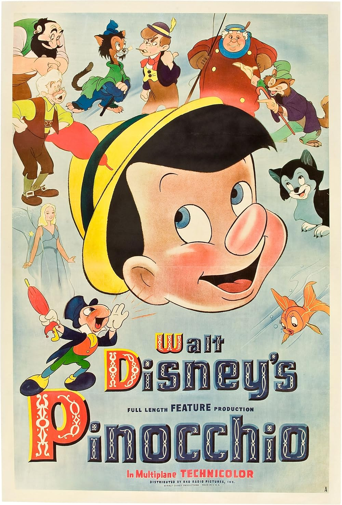

Pinocchio
13th Academy Awards
(Oscars 1941)
2 Nominations, 2 Awards
| Nominations | ||
|---|---|---|
| Category | Nominees | Result |
| Music (Original Score) | Leigh Harline, Ned Washington, and Paul J. Smith | Won |
| Music (Song) "When You Wish Upon A Star" |
Leigh Harline and Ned Washington | Won |